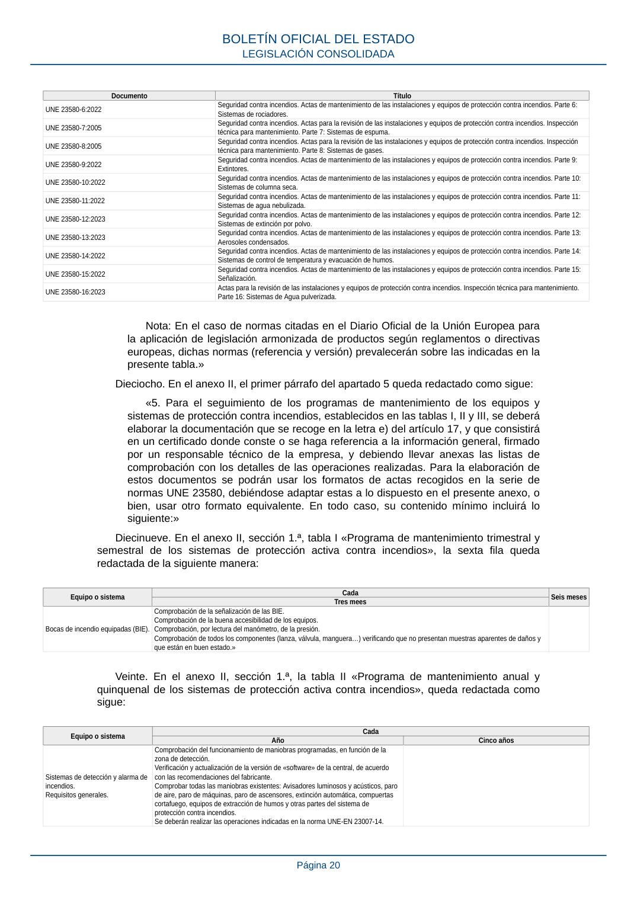

RSCIEI · Fragmento de PDF p20 · versión 2025-04-10 · capa asociada
Formatos: JSON compacto · Markdown · PDF fuente
Ámbito del documento · texto del ámbito · documento y tablas
ID técnico a0047 · PDF pág. 20 · jerarquía no validada por persona · no es capítulo: sin_linea_de_encabezado · padre: raíz · literal original en el contenido: «elaborar la documentación que se recoge en la letra e) del artículo 17, y que consistirá en un certificado donde conste o se haga referencia a la información general, firmado»
elaborar la documentación que se recoge en la letra e) del artículo 17, y que consistirá en un certificado donde conste o se haga referencia a la información general, firmado en un certificado donde conste o se haga referencia a la información general, firmado

PDF fuente redistribuible: copia fiel enlazada en esta página (SHA256 verificado).